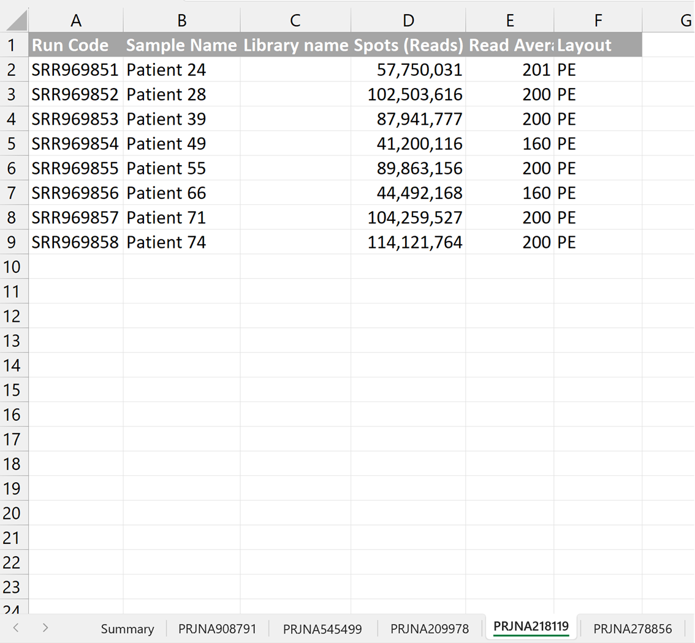

perl Irimia_Script_SRA_File_maker.pl SraAccList.csvComo descargar datos de repositorios on-line
Para buscar RNAseq disponibles on-line es aquí me han recomendado acceder a NCBI, a la sección SRA.
Aquí realizamos la búsqueda que queramos. Veremos que muchos títulos, esto se debe a que lo que nos aparece son muestras de experimetos, no experimentos completos (como sucede en GEO). Es por ello por lo que en todo momento estamos viendo dónde se ha secuenciado la muestra, el número de reads (spots), el número de bases y lo que pesa cada archivo.
Cuando tengamos un candidato de muestra de interés clickamos y acedemos a la siguiente pantalla:
Dónde 1) es el nombre que recibe el proyecto y donde tendremos toda la información asociada al mismo, tanto publicación (si está publicado), como accesos a GEO (si la tiene, que normalmente si) y accesos a la misma información que 2). Esta información se trata de un listado de los SRA de las muestras secuenciadas en este experimento. Tenemos que clickar en 2 para ver este listado, que es lo que nos interesa.

Una vez aquí nos saldrá el Run Selector (hay veces que no aparecer pero no pasa nada, no es imprescindible hacer este paso), donde podremos ver las propiedades del experimento:
Aquí tenemos toda la información del experimento (en common Fields) al que pertenecen las muestras. Esta información es muy útil para generar un documento excel para recopilar información de posibles RNAseq a analizar (dejo el ejemplo del que he creado yo):
Es recomendable dejar los hipervínculos para luego facilitar el trabajo a la hora de buscar los datos. Continuaremos trabajando como ejemplo con el experimento que he ido mostrado en las ilustraciones. El siguiente paso es descargar un .csv con los accession de los SRA que vamos a analizar en la primera columna. Para ello tenemos que tener buscado en el NIH/SRA el código SRA del estudio al que están asociadas las muestras (tal y como se ve en la ilustración 1). Una vez aquí, clickamos en “Send to”, seleccionamos “File” y en formato seleccionamos “Accession List”, tal y como se observa en la Ilustración 1, y le damos a Create File:
Nos quedaría el siguiente (1), del cual tendríamos que eliminar la primera fila para que quede como (2) de forma definitiva.
!!Comienzsa la programación!! O no.. depende de ti jeje
1 Preparación de datos para evaluar su uso
El siguiente paso consiste en la descarga de los SRR de cada muestra del experimento que lo hacen con un archivo perl (en el último subapartado de este apartado viene tanto el código como la explicación del mismo) que se puede ejecutar directamente en bash (Linux y Mac) pero para Windows hay que hacer unas cosas antes (está en su correspondiente apartado).
Realmente este apartado no es estrictamente necesario hacerlo mediante códigos ya que es extraer información de la web y ponerla en un Excel para así ver que proyecto es el que podemos utilizar para nuestros análisis y de qué manera.
Tras el procesamiento de datos (explicado previamente y desglosado en los apartados siguientes) tenemos que crear en distintas hojas del mismo Excel que habíamos creado en la recopilación de datos y en cada hoja guardaremos los distintos datos correspondientes a cada muestra de la siguiente manera (con los comandos perl obtenemos la info en un .txt y es simplemente copiar y pegar en la hoja):
Si se quiere obtener a mano esta información debemos de buscar la información de los encabezados. La primera columna (1) va a ser el listado de muestras que hemos generado en el .csv anterior. La segunda columna son los nombres de las muestras (2), los cuales podemos utilizar o bien el nombre con el que esté subido en SRA o bien podemos cambiarlo nosotros como queramos (este nombre ya va a ser de nuestro análisis a partir de ahora). Para obtener la columna del número de spots (4) de cada muestra lo tenemos en el SRR de la muestra buscando en SRA:
En esta misma página tenemos que clicar en el SSR del run (rodeado con un círculo en la imagen anterior) para obtener el resto de información. Esto nos dirigirá a la siguiente página, donde he indicado con números de dónde coger la info:
1.1 Comando Perl de descarga de datos para Linux y Mac
Para trabajar con este script y tener la información ordenada es recomendable crear una carpeta en el escritorio con un nombre sin espacios. En esta carpeta tenemos que introducir un .csv con los accession que hemos preparado previamente. Para ejecutarlo, el comando es el siguiente:
Donde, - Perl Abre las funciones del lenguaje perl. - Irimia_Script_SRA_File_maker.pl es el script que se va ejecutar. - SraAccList.csv es el documento csv que nos bajamos con los accesion de las muestras de un experimento.
1.2 Comando Perl de descarga de datos para Windows
Para utilizar Perl en Windows hay que descargar “Strawberry” e instalarlo en C\: (siguiendo las recomendaciones de instalación en todo momento).
Una vez lo hemos instalado podremos utilizar el lenguaje Perl en nuestro ordenador Windows. Para poder utilizarlo tenemos leer el script de descarga automática (Irirmia_Script_SRA_File_maker.pl).
Warning
Para visualizar el script (no es necesario modificar nada del script) es recomendable descargarse un visualizador de documentos. En Windows hay un visualizador bastante cómodo de utilizar que es el “Visual Studio Code”.
Para trabajar con este script y tener la información ordenada es recomendable crear una carpeta en el escritorio con un nombre sin espacios (por ejemplo, yo puse “Visual_Studio_Folders”. En esta carpeta tenemos que introducir un .csv con los accession.
Tip
Este archivo lo tenemos que colocar en la misma carpeta que el script (la que hemos creado para utilizar Perl)
Una vez tenemos esta carpeta con los documentos adecuados abrimos el terminal de Windows (buscamos cmd) y nos vamos a la carpeta que hemos creado con estos archivos y lo ejecutamos con la misma sintaxis que para Linux.
1.2.1 Problemas de windows
Es posible que si estamos utilizando el cmd de windows nos de el siguiente error:
"wget" no se reconoce como un comando interno o externo, programa o archivo por lotes ejecutable.En este caso necesitamos instalar esta función como función ejecutable. Para ello debemos seguir las instrucciones de la siguiente página web
En esta página nos tenemos que ir al apartado siguiente (y ver el video):
Por si acaso, dejo también el enlace tanto del video en youtube como de la página de descarga (hay que descargar el de x64 bits, https://eternallybored.org/misc/wget/)
Por algún motivo no se me ha descargado (por error 404 al intentar acceder a la pag web) pero no pasa nada porque voy a empezar a trabajar en el superordenador que va con Linux y así se me acaban los problemas.
1.3 Contenido Script Irirmia_Script_SRA_File_maker.pl
1.3.1 Código
open (I, $ARGV[0]);
open (O, ">$ARGV[0].out");
system "mkdir SRA" unless (-e "SRA");
while (<I>){
s/\r//g;
s/\"//g;
($sra)=/(.+)/;
sleep 2 unless (-e "$sra" || -e "SRA/$sra");
system "wget https://www.ncbi.nlm.nih.gov/sra/$sra -O SRA/$sra" unless (-e "$sra" || -e "SRA/$sra");
open (F, "SRA/$sra");
$/="";
$PE=$n_reads=$all_info="";
while (<F>){
if (/$sra\<\/a\>\<\/td\>\<td align\=\"right\"\>(.+?)\<\/td\>\<td align\=\"right\"\>(.+?)\<\/td\>\<td align/){$n_reads=$1;$bases=$2;}
if (/(\>Sample\: .+?)\>Library\:/){$all_info1=$1;}
if (/(\>Library\: .+?)\>Runs\:/){$all_info2=$1;}
if (/Layout\: \<span\>PAIRED\<\/span\>/){$PE="PE";}
elsif (/Layout\: \<span\>SINGLE\<\/span\>/){$PE="SE";}
}
close F;
$/="\n";
($bp,$mult)=$bases=~/(.+)(\w)$/;
$bases=$bp*1000 if $mult eq "K";
$bases=$bp*1000000 if $mult eq "M";
$bases=$bp*1000000000 if $mult eq "G";
$n_readsT=$n_reads;
$n_readsT=~s/\,//g;
$le=sprintf("%.0f",$bases/$n_readsT) if $n_readsT>0;
$le="NA" if $n_readsT==0;
($info1)=$all_info1=~/\>Sample\:.+?\>(.+?)\</;
($info2)=$all_info2=~/\>Name\:.+?\>(.+?)\</;
print O "$sra\t$info1\t$info2\t$n_reads\t$le\t$PE\n";
}
exit;1.3.2 Explicación del Script
open (I, $ARGV[0]);open: open es una función incorporada en Perl que se utiliza para abrir archivos o comandos externos. Permite interactuar con archivos para lectura, escritura o ambas.(I, $ARGV[0]): Esta parte de la función open toma dos argumentos encerrados entre paréntesis.
I: El primer argumento, I, es un identificador de archivo o “filehandle”. En Perl, los filehandles son como variables que representan archivos abiertos. En este caso, I se utiliza como el filehandle para referirse al archivo abierto.\$ARGV[0]: El segundo argumento,\$ARGV[0], es una variable de tipo array.\$ARGVes un array especial en Perl que contiene los argumentos de línea de comandos proporcionados a tu script de Perl.\$ARGV[0]se refiere específicamente al primer argumento de la línea de comandos, que generalmente es el nombre del archivo que deseas abrir. Por lo tanto,\$ARGV[0]es el nombre del archivo que deseas abrir.
La línea que proporcionaste, open (I, $ARGV[0]), abre el archivo cuyo nombre se proporciona como el primer argumento de línea de comandos cuando ejecutas el script de Perl y lo asocia con el filehandle I. Después de esta línea, puedes leer o escribir en el archivo utilizando el filehandle I.
Por ejemplo, puedes leer líneas del archivo de la siguiente manera:
while (<I>) {
# Procesar cada línea del archivo abierto
print $_; # Imprimir la línea
}Luego habría que cerrar el archivo con: close(I)
open (O, ">$ARGV[0].out");Aquí está la explicación: 1. open: Al igual que en la línea anterior, open es una función incorporada en Perl que se utiliza para abrir archivos o realizar operaciones de archivo. 2. (O, ">$ARGV[0].out"): Esta parte de la función open toma dos argumentos encerrados entre paréntesis. - O: El primer argumento, O, es un identificador de archivo o “filehandle”. Al igual que en el ejemplo anterior, se utiliza como un filehandle que representará al archivo que estamos a punto de abrir. - >\$ARGV[0].out: El segundo argumento es una cadena de texto que define cómo se abrirá el archivo. En este caso, la cadena contiene “>”, que indica que el archivo se abrirá en modo escritura (output), y \$ARGV[0].out, que es el nombre del archivo de salida. $ARGV[0] se refiere al primer argumento de la línea de comandos que generalmente es el nombre del archivo de entrada, y .out es una extensión que se agrega para el archivo de salida.
Entonces, la línea open (O, ">\$ARGV[0].out"); está abriendo un archivo para escritura. Si \$ARGV[0] fuera, por ejemplo, “entrada.txt”, esta línea crearía un nuevo archivo llamado “entrada.txt.out” (o con la extensión que hayas especificado) y asociaría el filehandle O con este archivo.
system "mkdir SRA" unless (-e "SRA");Explicación: 1. system: es una función en Perl que te permite ejecutar comandos del sistema operativo desde tu script de Perl. Puedes proporcionarle un comando entre comillas, y Perl lo ejecutará en el sistema operativo. 2. mkdir SRA: Este es el comando que se ejecutará en el sistema operativo. En este caso, se trata del comando mkdir, que se utiliza para crear directorios (carpetas) en el sistema de archivos. mkdir SRA significa que se intentará crear un directorio llamado “SRA” en el directorio actual. 3. unless (-e "SRA"): Esta parte de la línea es una condición que se evalúa antes de ejecutar el comando mkdir. La condición verifica si el directorio “SRA” no existe en el sistema de archivos. Para hacerlo, utiliza -e, que es un operador de archivo en Perl que verifica si un archivo o directorio existe. Si el directorio “SRA” no existe (unless significa “a menos que” o “si no”), entonces se ejecuta el comando mkdir SRA para crear el directorio. En resumen, la línea system "mkdir SRA" unless (-e "SRA"); comprueba si el directorio “SRA” ya existe en el sistema de archivos. Si no existe, crea el directorio utilizando el comando del sistema mkdir. Esto es útil para asegurarse de que un directorio necesario esté presente antes de realizar alguna operación que dependa de su existencia en tu script de Perl.
A continuación: 1. El script entra en un bucle while que lee líneas del archivo abierto para lectura (I). Las líneas leídas se procesan de la siguiente manera: - Se eliminan los caracteres de retorno de carro \r y las comillas dobles ” de cada línea. - Se extrae el valor entre paréntesis ( ) en la variable $sra. 2. Después, el script espera 2 segundos (con sleep 2) si no se encuentra un archivo con el nombre almacenado en $sra en el directorio actual o en el directorio “SRA”. Esto parece ser una pausa para dar tiempo a que el archivo se descargue antes de continuar. 3. Si el archivo no existe en ninguno de los dos directorios, se utiliza el comando system para descargar el archivo desde el sitio web del NCBI y guardarlo en el directorio “SRA”. 4. Luego, se abre el archivo recién descargado (SRA/\$sra) y se procesa su contenido para extraer información relevante, como el número de lecturas, la cantidad de bases, el tipo de lecturas (pareadas o no), etc. 5. Se realiza una serie de transformaciones y cálculos en los datos extraídos, como la conversión de unidades de bases (K, M, G) a números enteros y el cálculo de la longitud promedio de las lecturas (\$le). 6. Finalmente, se extraen más información de las variables \$all_info1 y \$all_info2, se formatea y se imprime en el archivo de salida (O) junto con otros datos procesados. 7. El script continúa procesando el siguiente conjunto de datos en el archivo de entrada hasta que se llega al final del archivo. 8. Finalmente, el script sale con la instrucción exit, lo que indica que ha terminado su tarea.
En resumen, este script se utiliza para descargar información sobre secuencias de ADN desde el NCBI, procesar esos datos y guardarlos en un archivo de salida para su posterior análisis.
2 Elección de BBDD a analizar
Todos los ejemplos de comentarios son para análisis de splicing alternativo (SA), para un análisis bulk se podrían utilizar todos.
Para splicing alternativo vamos a ver distintas opciones (ejemplos reales) y los requerimientos necesarios mínimo para realizar este tipo de análisis de forma robusta, así como posibles soluciones para poder utilizar los datos.
2.1 Caso 1
Este primer caso es el que he estado utilizando como ejemplo hasta ahora mismo. Los datos serían los siguientes
Si nos fijamos tenemos un gran problema a resolver: El número de spots es muy bajo. SE significa que es Single End, es decir, que solo se ha hecho una lectura del fragmento (en dirección 3’->5’ por lo que el número de Spots es el número real de lecturas que se han hecho (luego veremos un ejemplo para Paird End, PE). Para un análisis adecuado de splicing alternativo necesitamos un mínimo de 100 M de spots (aunque podemos bajar a 75 M como mucho). Una posible solución es juntar muestras.
Otro problema que tenemos con estos datos es que la Read_Average_Length tiene en algunas muestras menos de 50 y para un análisis de AS tenemos que tener una longitud de lectura de 50 de manera que esas muestras no las podemos utilizar, lo que reduce las posibilidades de poder llegar al mínimo al juntar las muestras.
Una explicación más detallada del tratamiento de datos de este caso la podrás encontrar en la carpeta “Casos_Practicos_SA/Caso_1”.
2.2 Caso 2
Podemos ver que en este caso no tenemos Library Name pero no pasa nada, no es imprescindible realmente. En este caso, la longitud de lectura es adecuada ya que todas tienen una media superior a 50. Tenemos una secuenciación SE (Single-End) de nuevo de manera que la Avg_Lenght es la que estamos viendo. Volvemos a tener el problema de tener un número de lecturas muy reducido pero en este caso cada muestra es una condición distinta de manera que agruparlas no sería correcto. En este caso no se podría realizar un análisis de SA.
2.3 Caso 3
Podemos ver que en este caso no tenemos Library Name pero no pasa nada, no es imprescindible realmente. En este caso, tenemos una secuenciación Paird-end (PE) de manera que la longitud de lectura es adecuada es la mitad de lo que estamos viendo ya que en este tipo de secuenciación, la lectura se hace tanto en dirección 5’3’ como en dirección 3’5’. Este tipo de secuenciación es bastante más robusta y fiable que la SE. Todas tienen una media superior a 50 si dividimos el Avg_Lenght entre 2 (de hecho todos están sobre 80-90). Volvemos a tener el problema de tener un número de lecturas muy reducido pero en este caso si podemos intentar agrupar los pacientes mediante clustering no dirigido para agrupar en 3 y 4 aquellos que más se parezcan y así poder tener un análisis 2 vs 2. En este caso si se podría realizar un análisis de SA. Una explicación más detallada del tratamiento de datos de este caso la podrás encontrar en la carpeta “Casos_Practicos_SA/Caso_3”.
2.4 Caso 4

En este caso tenemos una cohorte de 8 pacientes todos ellos con la misma patología. Dado que no podemos ver condiciones entre ellos (a simple vista, podríamos buscar los fenotipos de los pacientes e identificar grupos de comparación) no es un buen ejemplo para comenzar a analizar.
2.5 Caso 5
En este caso, tenemos una secuenciación Paird-end (PE) de manera todas tienen una media superior a 50 si dividimos el Avg_Lenght entre 2 (de hecho todos están sobre 75). En este caso hay un número de lecturas bastante bueno, de entorno a 100 M todos ellos. En este caso se podría realizar un análisis de SA. De hecho es el mejor para empezar a practicar de manera que este será el Dataset que utilizaré para continuar el proceso y las explicaciones.